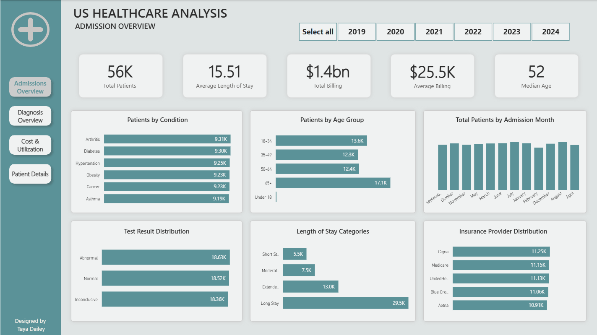
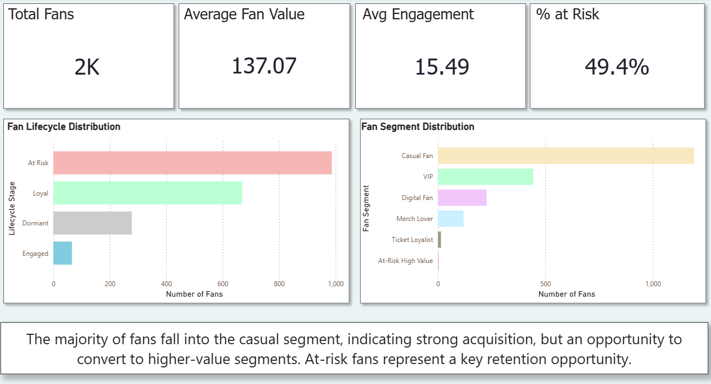
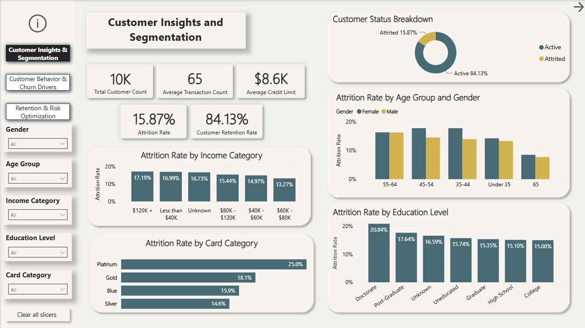
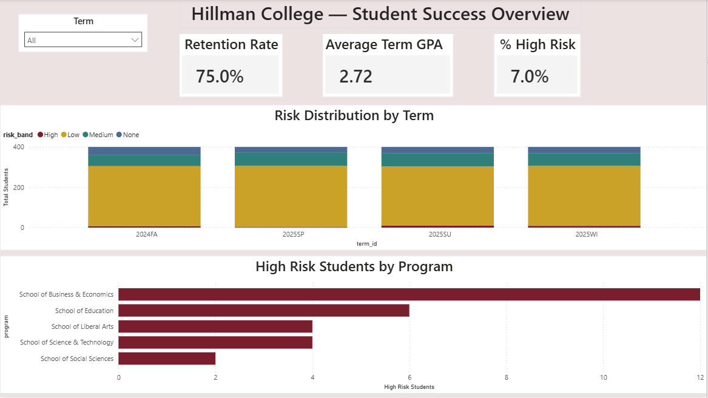

BI and business systems analyst with 3+ years across a health plan and a health system's revenue cycle. I turn messy, multi-source data into Power BI dashboards and process fixes, from requirements through rollout.
dailey.t@outlook.comFewer people missing problem quiz questions, after my training dashboard traced them to wording that didn't match policy.
Patient records modeled in my U.S. Healthcare Power BI report, with executive scorecards and a patient explorer.
Data Analyst Professional Certificate (2025), with Microsoft PL-300 (Power BI Data Analyst) in progress.

Admissions, diagnoses, cost and utilization across 55,000+ synthetic records.

Four sources merged into a fan-level model, with data quality flags and a next-best action for every fan.

Attrition drivers and risk bands, built so a retention team knows where to act first.

Privacy-safe synthetic data, a SQLite student-term mart, and the risk drivers advisors can act on.